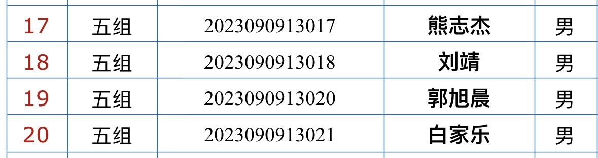
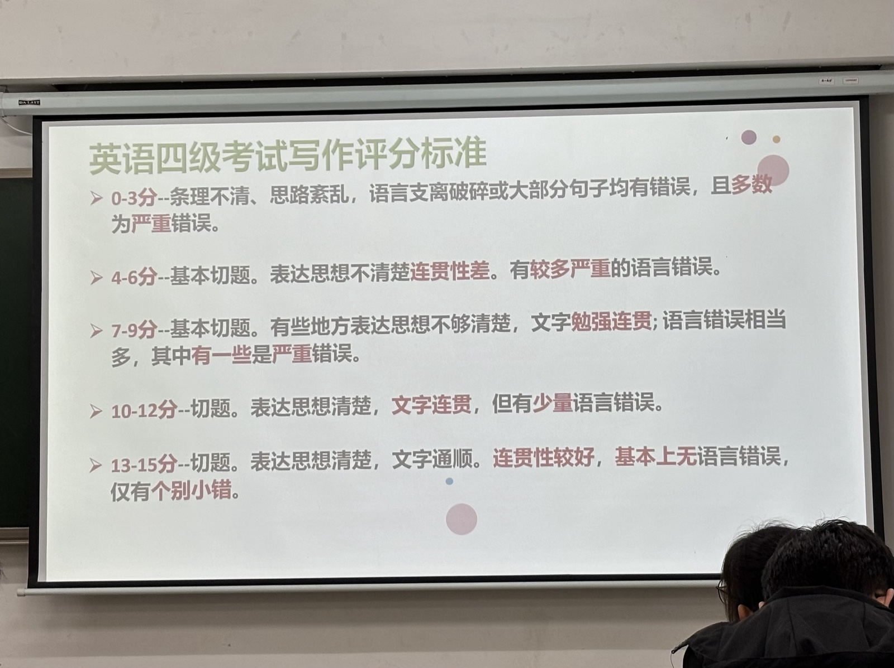
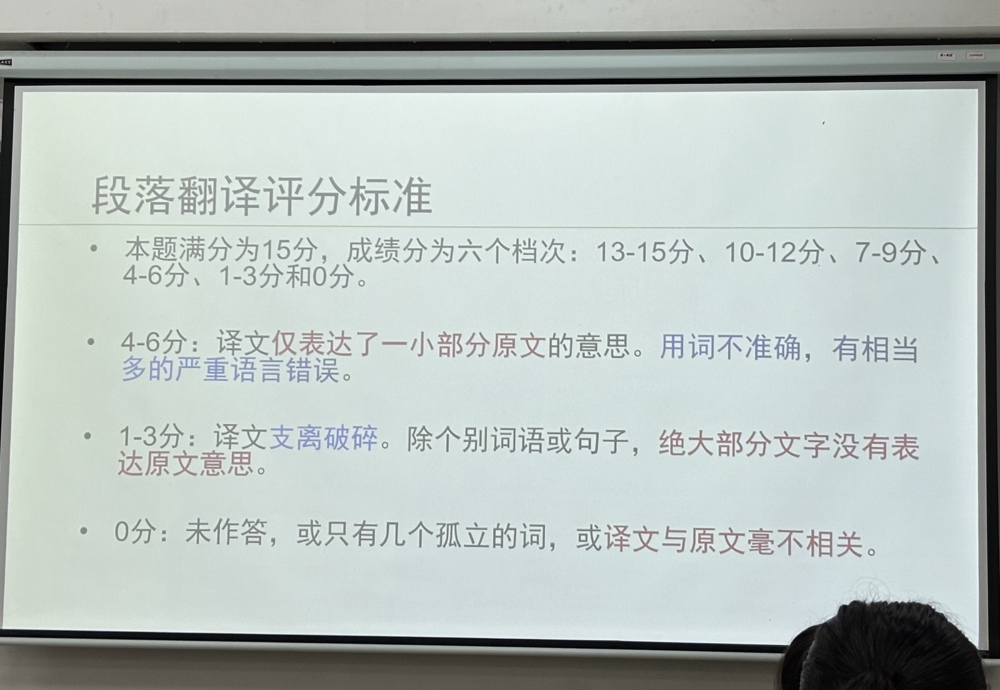
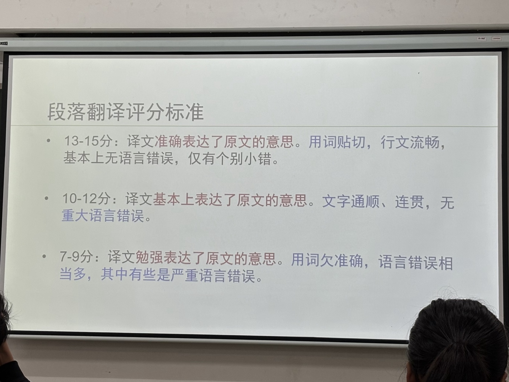
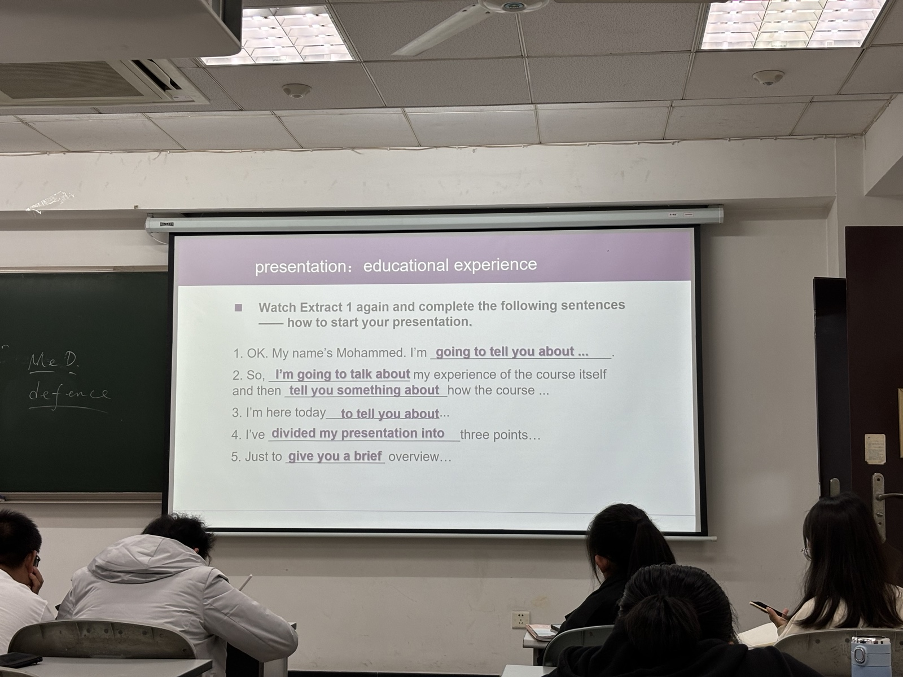
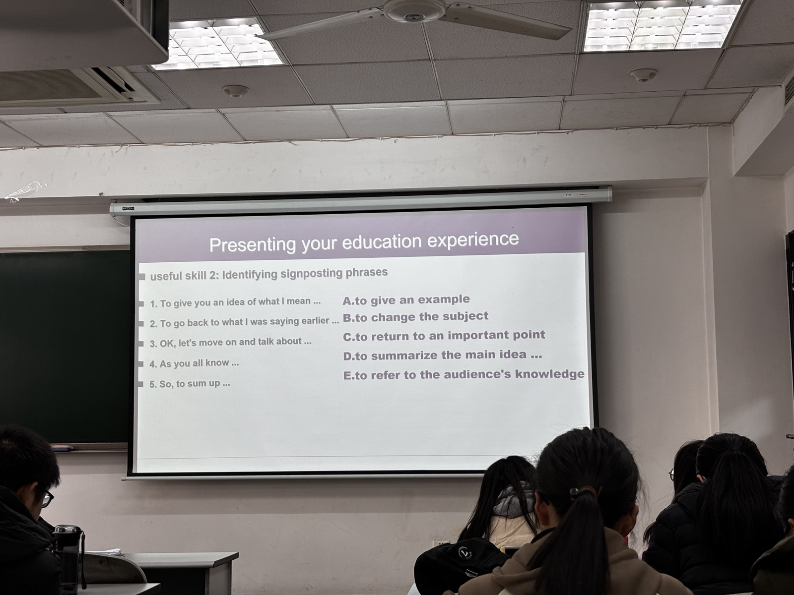
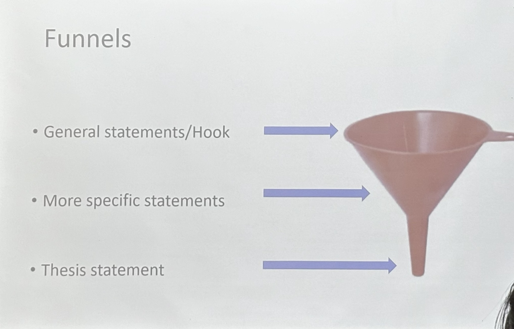
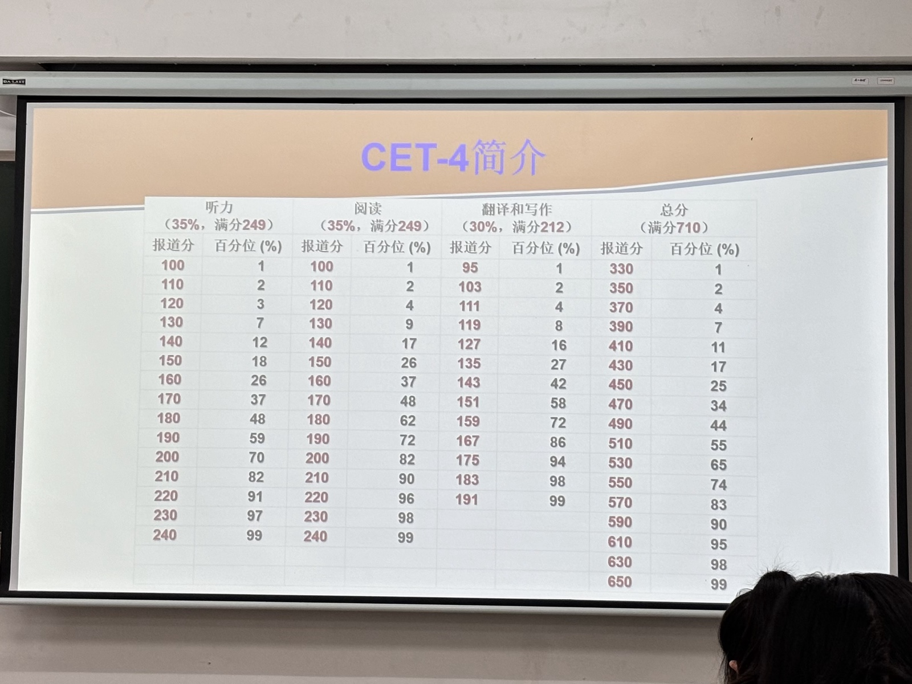
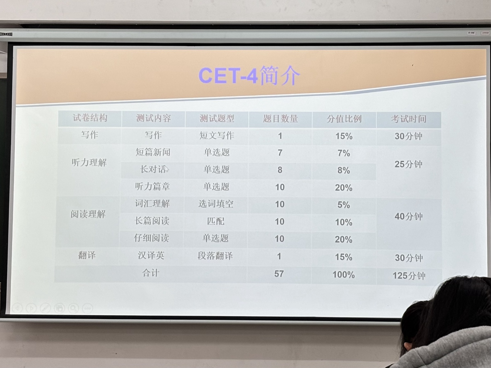
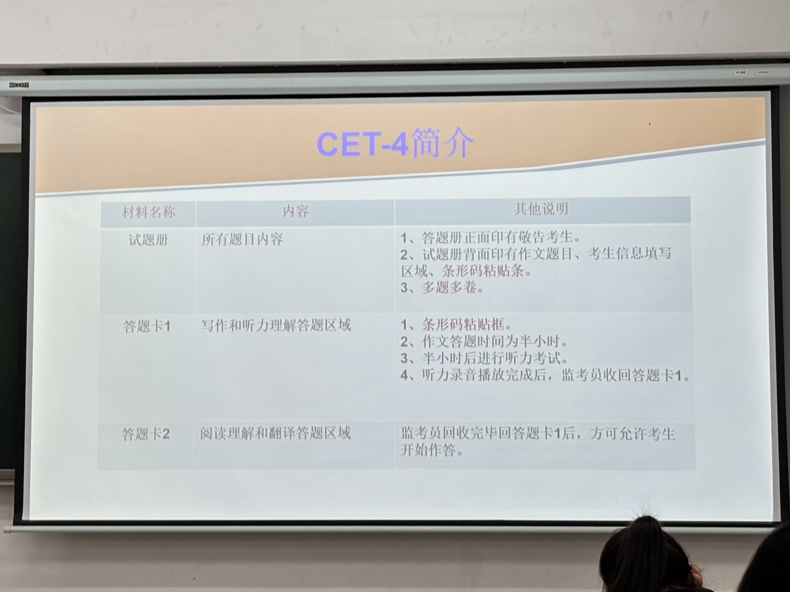

通用英语（刘新慧）
刘老师的电影安利
- 白日梦想家
- 奇迹男孩
Unit2 - Love
- 怦然心动
- 和莎莫的500天
- 诺丁山 - 超现实的love
- 他其实没那么喜欢你
- 傲慢与偏见
- 理智与情感 - 喜欢一个人可以放纵，但爱一个人是需要克制的
Unit3 - Philosophy
- 当幸福来敲门
- 楚门的世界
- 功夫熊猫
- 飞屋环游记
- 遗愿清单
- 成长教育
计算机
- 史蒂夫·乔布斯
- 社交网络（Facebook）
- 明日之后
- 2012
社会与人生
- 了不起的盖茨比
- 金钱永不眠
- 头号玩家
- 真爱至上
分组

23.9.11
Objective of College English
学习外语的目的是获得语言能力，外语考试的目的是考察语言能力
语言能力约等于语言知识和语言技能
语言知识和语言技能不可偏废
能力强不强，主要看应用与实践
国外文化背景也很重要
Teaching Plan
教学与考试
大一上 - 通用英语 - 考试难度大概四级
大一下 - 通识英语 - 考试难度大概六级
大二下 - 专用英语 - 考试难度超越六级
每学期期末均须参加校本英语能力考试
实践
除正常上课外, 需参加口语测试、在线视听、课外写作训练、英文经典阅读以及其它系列课外实践活动
以考代修政策
大二下之前（前三学期）考雅思或托福，（建议大一完整假期考完）达到要求的成绩可以申请免修大二下的英语课
课程设置
大一上的基础课：
1. 课时：56课时 + 8课时
2. 期末口语考试
3. 课外u校园听力练习：
统一上机完成规定单元（每两周一个单元，过时不补）
学生得分：在线完成时间30%+答题正确率70%
专人平台管理和导出成绩（飞书搜“外语学院谢婷”）（关于听力的有事找谢婷老师）
任课老师只负责录入成绩
4.课外中西经典阅读
5. 参加课外英语学习讲座
大一下的文学英语
大二下的学术英语
以上三者都要搭配英语实训实践课程选择
***
期末口语测试：
预计第16周举行
占成绩10%
话题大致为U校园听力教材前6个单元的话题
慕课
1）词汇考试
Test1-Test14共14个考试，每个考试15题，题型为选择填空题和划线词替代。
每题3次答题机会，取高分。
词汇考试每周三早上8:00开放，次周周二早上8:00结束并提取数据，反馈教师。
2）期末词汇考试
14个词汇考试的所有题目汇入题库，共210题。
系统自动抽题组卷，选项乱序。
3次答题机会，取最高分。
期末开放，具体时间待定。
评分
每题1分，每个考试满分15分，所有测试完成后统一按百分制换算。
课程评价体系
课程形成性评价60%：
口语10%
课上表现70%：
项目15%（做视频）
课堂表现20%
课上回答问题
让老师记住名字
课后作业漂亮
作业20%（作文）
词汇测试（飞书）20%
口语考试10%
线上听力15%
期末考试40%
85分满绩
注：词汇测试指南 - 平台：成电慕课 - 每周词汇考试：共14个，每个考试15道题（每题3次答题机会，取高分） - 每周三早八点开放，次周周二早八点结束 - 期末词汇考试：系统自动抽题组卷 - 主管老师：飞书@张佳琪
tips to survive college
"Tell me, I forget; teach me, I listen; involve me, I learn. " - Benjamin Franklin
多与老师沟通交流
漂亮的作业
课堂作业
Question 1: What's your understanding about Chinese Dream from the perspective of a nation, and of an individual?
From individual , I think that Chinese Dream requests us to make our best to study hard to repay our country.
Question 2: Compare Chinese Dream and American Dream, and explain the difference between them.
From our nation, I think Chinese Dream stand for our country‘s grand purpose to realize Chinese people's happiness and bliss.
23.9.18
单词
- average life expectancy - 寿命
- medical services - 医疗服务
- opening up - 开放
- energy resource
- mobile Internet - 移动互联网
- cashless payment
- materially and spiritually - 物质上的和精神上的
- income growth
- stride - n. 进步；飞跃
- tech powerhouse - n. 科技强国
- per capita disposable income - 人均可支配收入 per capita - 人均 disposable- 可支配的
- enliven - vt. 使充满活力
- sector - n. 行业；部分
- institution - n. 机构
句子
- Now with a population of 1.4 billion, China has made one of the greatest strides in healthcare that the world has ever seen.
- It is striving to become a tech powerhouse, transitioning from "imitator" to "innovator".
- The per capita disposable income has increased from 98 yuan in 1956 to 28,228 yuan in 2018, and Reform and Opening Up has enlivened the cultural sector.
- Income growth, institutional reform, and opening up have enriched the Chinese population both materially and spiritually.
- China has entered a new era of high-quality development and has been presented with new opportunities and missions.
单词
- rejuvenation - n.复兴
- prosperity - n.富强
- poverty alleviation - 扶贫
- offspring - n.小孩
- infrastructure - n.基础设施
23.9.22
单词
- collective - n.集体的；共同的
- a multiplier effect - 乘数效应（经济学）
- expand - v.扩张
- misperception - n.误解
23.9.25
1. Paraphrase （诠释）
types
- Paraphrasing to bring clarity （做阐述）
- paraphrasing to organize （结构更精炼）
- Paraphrasing for abstract（抽象的） or concrete understanding （使语言更容易理解）
Definitions
Steps
- Have a deep understanding of the source material. (all essential information from the text)
- Restructure the selected information into your own words. (This means completely recreating phrases and sentences, not merely changing one or two words.)
- Review to make sure the original ideas from the source material are still in tact.
- Cite the source in order to let readers know where the original idea presented in the paraphrase is from.
Example
- Original text:
Freeman concludes, "The more likely prospect is that China will take its place（这里指中国找到了自己的位置，而不是代替的意思 alongside the US and others at the head of a multilateral system of global governance. In such an oligarchic（寡头政治的） world order, China will have great prestige but no monopoly（垄断）on power comparable to that which the US has recently enjoyed."
- Reference:
As far as Freeman is concerned (cite the source), China would more likely become a powerful country at the top of the world, in which a bunch of states predominate, like the US and the nations alike. Nevertheless, since the current world is under the control of few leading countries (oligarchic), China will be very strong and influential, but never grow into the only superpower as the US is now.
短语
- lagging behind leaves one vulnerable to attacks. （落后就会挨打）
2. Self-fulfilling prophecy
- Understanding:
Peoples always do something by means of their prediction
- story
For example, I think that I can buy the train ticket for going home successfully so that I will image the scene where I meet my families.
23.9.27
单词
- cast blame - 怨天尤人
- visionary milestone - 有远见的里程碑
3. Topic sentence
由两部分组成：Topic + Controlling idea
特点：
- Must support the thesis statement
- Must have keywords and/or a transition
-
Avoids pronouns（代词）
-
短而精
- 概括整个段意
- 一个段落只能有一个topic sentence
- 实用，不华丽
- 不能把天聊死（不能写的太清楚，要引发读者好奇心）
- 明确的强硬的强烈的观点可以是good topic sentence
国庆作业
Essay Task
Having read the passage again, I learn something new and something different. And I want to inform you of something I learned.
There are many misconceptions about the Chinese Dream in the world. For example, some foreigners think that the Chinese Dream is an aggressive and expansionist Dream. According to the misconception, we have promised that China will never seek hegemony. Except for this misconception, some foreigners even think that China will take its place alongside the US and monopoly no power comparable to that which the US has recently enjoyed.
For this phenomenon, there are some suggestions I want to give. Initially, for every people, we are supposed to boost the spread of Chinese culture. What's more, for our society, Filming some documentaries about the Chinese Dream for the whole world is a great way to enhance foreigners' understanding to our Chinese Dream. Last but not least, for our country, greatly promote the publicity of the Chinese dream worldwide is a necessary part in the Chinese Dream's spread work which could build a country image that is confident and resolute to make the world a better place in foreign .
I believe that our efforts will plays a great role.
Translate 1
- 西方对于中国实现中国梦的焦虑扎根于他们认为中国会变得在国际事务尤其是周边小国的事务上更加坚定，更加有攻击性，更加有扩张性。
- 中国梦与美国梦不同的地方在于中国梦表达的是中国集体的梦想：实现中华民族的伟大复兴，它与历史上提高中国人个人的幸福健康，收入财富的梦想是完全不同的。
- 通过展示中国对于自身问题的坦率和对于开放的展现自身问题的自信，我们希望能加深对于中国梦真正意义的欣赏——是中国的转变和给予世界的礼物。
- 历史展示了每个与我们国家和民族紧密联系的我们的未来和命运。只有在国家与民族繁荣时个体才能得以~~繁荣~~幸福。实现中华民族的伟大复兴是一个光荣的并且艰巨的任务，它需要中国人一代接一代的接续不断的努力。
Translate 2
- We speak Chinese Dream, which represents the realization of the great rejuvenation of the Chinese nation. "Rejuvenation" doesn't represent the backing to Tang dynasty, and doesn't represent the backing to all nations' old dreams, but represents the pursuit of China to catch up with the world, which will make China standing still in the forest of the world's first nation.
- The development of China is the growth of the power of world peace, and is the energy of spreading friendship. While China chases its dream, China has also ~~brings~~brought the massive power and chances to other countries and the world economies by developing itself.
- China will never abandon its legitimate rights and interests, but China will tend to other countries while pursuing its interests and will be friendly to its neighbors countries. What‘s more, President Xi refer to the friendly, honest, favour and lenient diplomatic concept.
- After China reform and open to the outside world, we summed up the historical experience, and explored continuously and hardly. Eventually, we found the correct way to the rejuvenation of the Chinese nation, and make the worldwide fruits. This way is Socialism with Chinese characteristics.
answer
- The Chinese Dream we talk about is to realize the great rejuvenation of the Chinese nation. "Rejuvenation" does not mean returning to the prosperity of the Han and Tang Dynasties, or revisiting the old dream of "all nations coming to court", but to enable China to catch up with the trend of the world and make the Chinese nation stand at the forefront of the world's nations again.
- China's development is the growth of the world's peace force and the positive energy of friendship. While realizing its own dream, China has also brought great impetus and opportunities to the development of other countries and the world economy through its own development.
- China has never given up its own legitimate rights and interests, but while pursuing its own interests, it has always taken into account the reasonable concerns of other countries, and built friendship and partnership with its neighbors. President Xi even put forward the principle of neighborhood diplomacy of "amity, sincerity, mutual benefit and inclusiveness".
- Since Reform and Opening-up, we have finally found the right way to realize the great national rejuvenation based on summarizing historical experiences and lasting, arduous exploration, and achieved success drawing worldwide attention. That is, the route of Socialism with Chinese characteristics.
2023.10.9
4. The factors deciding your writing score.
- grammar
- vocabulary
- cohesion （句与句，段与段之间的连接）
英语四级作文评分标准（15分）：

- 大学英语作文打分为整体打分（所以有亮点很重要），而不是像中学一样扣点。
- 注意少的语言错误非常重要
- 勇于尝试高难度的表达（作文中的错误是有容错率的，尤其是“高级的错误”）
- 使用地道的表达，名人名言，成语呀等
- 高分作文一定要有亮点
- 字数要求120词。作文字数过多不扣分，字数少n个字就扣0.1n分
2023.10.11
5. Translate
意思到位即可，不需要格式完全统一
四级考试翻译
答题顺序：
作文（30min） - 听力 - 笔试 - 翻译（30min）
最后做翻译题大多不会剩下30min，阅读理解难，需要时间多。
翻译题型简介
- 120-140词之间
- 翻译题型比作文难
翻译题型评分标准


翻译题实际判卷时在高分段是会数点的：
- 15分：有2处不明显的小错（冠词、单复数、时态、介词、用词不贴切）
- 14分：有5处不明显的小错（冠词、单复数、时态、介词、用词不贴切）
- 13分：有7处不明显的小错（冠词、单复数、时态、介词、用词不贴切）
- 12分：有1个严重错句
- 11分：有3处明显语言错句
- 10分：有4处明显语言错误
- 9分：5个句子正确或基本正确
- 8分：4个句子正确或基本正确
- 7分：3个句子正确或基本正确
解题步骤
- 通读全段，理解全文，确定时态
- 处理原文句子，找准主语，谓语，宾语，初步构造句子结构
- 合理断句，停句。（英文中的句号不代表中文中的句号）
23.10.18
6. Presentation
- How to start your presentation

-
give a overview (给你的presentation一个总览（目录））
-
贴路标

23.10.23
7. 作文
第一段结构（漏斗结构）
1. HOOK🪝（钩子）
- statistic
- anecdote（轶事）
- quotation（引用）
- question
- surprising statement
- a personal story
2. More specific statements（详情）
3. Thesis statement（观点句）

作文中的衔接（connection）
- 连接词（常规方式）
- repetition（重复）
- 重复关键词或短语
- 重复代词
- 重复同根词，词的变形
- 重复近义词（如flaws，shortcomings，not-so-good parts（缺点））
写作技巧
- 使用副词来介绍观点等句子（如Basically, Interestingly, Significantly, Surprisingly 等）或做总结（如To summarize, Essentially等）
四级写作建议
- 认真审题，根据大纲展开（不是翻译大纲）
- 下笔之前列提纲，基本结构完整（三段式即可！）层次清晰。题目给出的三个提纲不一定和三段一一对应，重要是逻辑清晰！
- 拼写和语法，尽量避免基本（低级）错误！（这里是失分最厉害的地方！）如，时态、语态，拼写，词组介词搭配。
- 聚焦
focus主题（topic sentence的必要性），支撑充分有力（善用举例） - 注意衔接，手段多样，提升流畅性
如：
to begin with, first of all, generally speaking, initially
there fore, thus,
in conclusion, to sum up, in a word, in brief, in a nutshell,
eventually,
afterward(以后), meanwhile, therefore, immediately,
for example, for instance
pave the way. 为…铺平道路
- 彰显亮点：高级词汇（大词，名次化，短语，地道说法，专业术语）搭配准确，成语谚语，名人名言
作业
第六单元翻译p115
-
As the third-generation deep-sea submersible independently developed by China, the Fighter not only became the world's first deep-sea submersible that can accommodate 3 people, but also worked together with the Canghai and Lingyun deep-sea landers, realizing the world's first high-definition video signal live broadcast and transmission under 10,000 meters underwater.
-
The sea we are familiar with is actually a field full of unknowns. About 95% of marine areas have not yet been explored, about 85% of marine biodiversity is unknown, and about 90% of marine resources have not been rationally utilized.
-
From the 100-meter shallow sea to the 10,000-meter deep sea, China's manned deep diving business has broken through the wind and waves for decades. It has successively broken through a number of core deep diving technologies, and finally made it a reality that "can reach the moon in the five oceans and lift turtles in the five oceans", giving China the ability to independently study the 10,000-meter deep sea.
-
If China wants to be strong and rejuvenated, it must vigorously develop science and technology and strive to become the world's major scientific center and innovation highland. We are closer to the goal of the great rejuvenation of the Chinese nation than at any time in history, and we need to build a world scientific and technological power more than at any time in history! Now, we have ushered in a new round of historical convergence between the world's scientific and technological revolution and the transformation of industry and China's development mode. We are not only facing a once-in-a-lifetime historical opportunity, but also facing a severe challenge of widening the gap.
23.11.08
作业：六单元作文
题目
Read Passage A again and write an essay no less than 200 words about another China's great achievement in Scientific & technological sector. Please concentrate your writing on the efforts and contributions made by scientists, engineers and technicians involved and reflect on what you can learn from them. Try to use competition as cohesive advice in the writing.
Passage
China's great achievement
Why could China made so many great achievement in recent years? Since the 21st century，China has producted a lot of grand achievement one by one. I think one of reason of this phenomenon is that there are nuomerous great scientists, engineers and technicians in China. So, I would like inform you of some famous chinese scientists and their experiences .
One of influential chinese scientists is YuanLongping, who was known as the father of hybrid rice. He’s research results made chinese people able to fill their stomachs and on longer starving. On the day when Yuan died, all the Chinese people and the whole country mourned him together. Then, as china became more and more powerful, an unknown scientist , ShenZhongfang, came into our views. To preserve our country’s secrets, she hided her name and was dedicated to designing and producing the Ground-to-air missiles, HongQi No.1, which symbolized our country’s independence to protect our country’s security. Because of her experience with the missiles, people called her life “Missile life”.
Having learned their story, I realize that patriotism is one person’s first characteristic, which can guide us toward the correct life road and make us more energetic in our daily life.
23.11.20
8. The key points for a good presentation
- Organize your presentation based on what you want your audience to understand and remember about your case.
- Structure your presentation clearly and logically
- Indicate your intention for this presentation as well as other general information on it
- Make your presentation interesting by interacting with your audience.
- Do not read scripts or read like you mean it.
- Keep your eyes contact with your audience.
- Be genuinely excited about sharing your information with others.
- Use body language frequently to break monotony(音调）.
- Make a concluding remark, and do not forget to list all the references at the end of your presentation
Unit 8 translation
1) The worldwide nature of human exchanges is deeper and broader than ever before. Countries are more frequently and closely interconnected and interdependent than ever before. Peace, development, cooperation and win-win have become the trend of the times. 2) In the development of civilization for more than 5,000 years, the Chinese nation has been pursuing and inheriting the firm concept of peace, harmony and harmony. The blood of the Chinese nation has no gene to invade others and dominate the world. 3) China actively advocates and practices multilateralism, maintains multilateralism and the international order based on rules, opposes protectionism and unilateralism, and promotes international cooperation to meet major challenges. 4) We should strive to build a world away from closure, openness and inclusiveness. There is an old Chinese saying: "Everything is nurtured but not harmful, and the Tao is parallel but not contrary." The prosperity of civilization and the progress of mankind are inseparable from seeking commonal and reserving differences, openness and tolerance, as well as civilized exchanges and mutual learning. History calls for human civilization to shine together. Different civilizations should coexist harmoniously and complement each other to jointly provide spiritual strength for human development.
23.12.04
Unit8作文
The significance community of shared future
In recent decades, China has deliver a opinion of "The Community of Shared Future". In my opinion, the concept is China's ideal world, and on matter to China or to the world, the concept is significant.
Initially, building a community of shared future can boost common development the world, especially promote the development of some developing countries in the world. For example, The Belt and Road, which was submitted by China, is a cooperative initiative that aims to promote economic cooperation among China's neighboring countries. And the initiative can boost the economic development of China, China's neighboring countries and even the world. Then, building a community of shared future is essential for sustainable development of our world. For instance, China is taking part in the world's development positively. Such as helping some african states to construct railway, which is significant for common development of the world. Last but not least, building a community of shared future can promote the protection of environment. A shared future symboliezes a shared earth and a shared earth symboliezes a shared environment. All of our human are in the same boat and a community of shared future is able to sustain our boat and develop it.
To sum up, the initiative of a community of shared future is China's wisdom which are benifiting all the world in numerous aspects absolutely, and it will contribute more and more wisdom and advantages to our world in the near future.
23.12.13
CET-4



关闭手机！！！